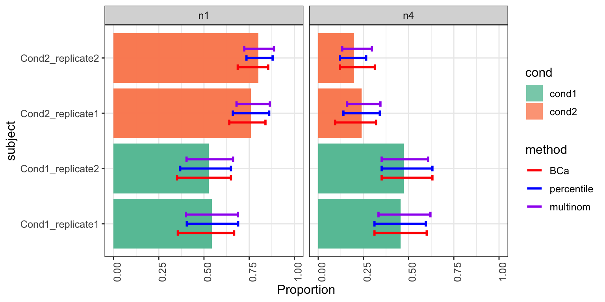
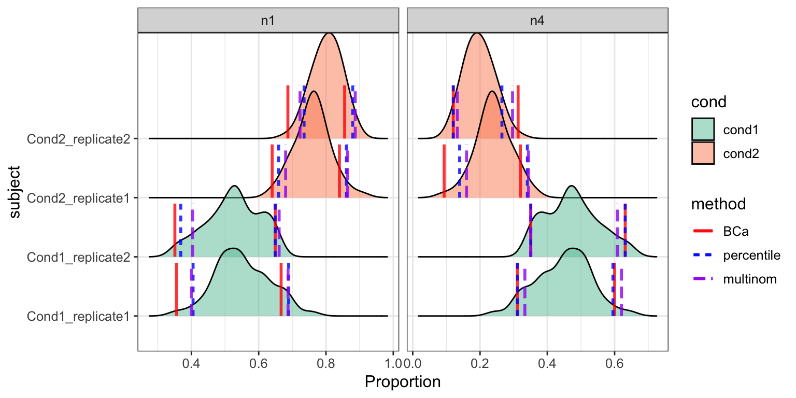

vignette.Rmdlibrary(scDC)
#> Warning: replacing previous import 'ggplot2::scale_discrete_manual' by
#> 'ggridges::scale_discrete_manual' when loading 'scDC'data("sim")
exprsMat <- sim$sim_exprsMat
subject <- sim$sim_subject
cellTypes <- sim$sim_cellTypes
cond <- sim$sim_cond
dim(exprsMat)
#> [1] 500 260
table(subject, cellTypes)
#> cellTypes
#> subject n1 n4
#> Cond1_replicate1 24 21
#> Cond1_replicate2 30 27
#> Cond2_replicate1 57 18
#> Cond2_replicate2 66 17
table(cond, cellTypes)
#> cellTypes
#> cond n1 n4
#> Cond1 54 48
#> Cond2 123 35Set nboot = 50 for illustration.
res_scDC_noClust <- scDC_noClustering(cellTypes, subject, calCI = TRUE,
calCI_method = c("percentile", "BCa", "multinom"),
nboot = 50)
#> [1] "Calculating sample proportion..."
#> [1] "Calculating bootstrap proportion..."
#> [1] "Calculating percentile ..." "Calculating BCa ..."
#> [3] "Calculating multinom ..."
#> [1] "Calculating z0 ..."
#> [1] "Calculating acc ..."
densityCI(res_scDC_noClust, c("cond1","cond1","cond1","cond1",
"cond2","cond2","cond2","cond2"))
#> Picking joint bandwidth of 0.0252
#> Picking joint bandwidth of 0.0252
res_GLM <- fitGLM(res_scDC_noClust, c("cond1","cond1","cond1","cond1",
"cond2","cond2","cond2","cond2"),
pairwise = FALSE)
#> Warning in checkConv(attr(opt, "derivs"), opt$par, ctrl =
#> control$checkConv, : Model failed to converge with max|grad| = 0.00110342
#> (tol = 0.001, component 1)
#> Warning in checkConv(attr(opt, "derivs"), opt$par, ctrl =
#> control$checkConv, : Model failed to converge with max|grad| = 0.0153461
#> (tol = 0.001, component 1)
#> Warning in checkConv(attr(opt, "derivs"), opt$par, ctrl =
#> control$checkConv, : Model failed to converge with max|grad| = 0.00144895
#> (tol = 0.001, component 1)
#> [1] "fitting GLM... 10"
#> [1] "fitting GLM... 20"
#> Warning in checkConv(attr(opt, "derivs"), opt$par, ctrl =
#> control$checkConv, : Model failed to converge with max|grad| = 0.00354625
#> (tol = 0.001, component 1)
#> [1] "fitting GLM... 30"
#> [1] "fitting GLM... 40"
#> [1] "fitting GLM... 50"summary(res_GLM$pool_res_fixed)
#> estimate std.error statistic df
#> (Intercept) 3.1791270 0.2065310 15.3929758 0.8677741
#> cellTypesn4 -0.1492135 0.3035738 -0.4915229 0.5182430
#> condcond2 0.9932637 0.2381592 4.1705876 0.9451340
#> subjectCond1_replicate2 0.2363888 0.1994143 1.1854153 1.1998800
#> subjectCond2_replicate1 -0.1013525 0.1593158 -0.6361736 1.1998800
#> cellTypesn4:condcond2 -1.1408530 0.3916524 -2.9129220 0.6070586
#> p.value
#> (Intercept) 0.02515396
#> cellTypesn4 0.69779917
#> condcond2 0.11748888
#> subjectCond1_replicate2 0.41965887
#> subjectCond2_replicate1 0.62431043
#> cellTypesn4:condcond2 0.17584791summary(res_GLM$pool_res_random)
#> estimate std.error statistic df p.value
#> (Intercept) 3.3042846 0.1738867 19.0025098 1.2170531 0.01247092
#> cellTypesn4 -0.1492039 0.3035720 -0.4914944 0.8617986 0.69006751
#> condcond2 0.8187111 0.1964235 4.1680913 1.3738168 0.09678896
#> cellTypesn4:condcond2 -1.1408365 0.3916512 -2.9128890 1.0097390 0.15271880res_scDC_clust = scDC_noClustering(cellTypes,
subject, calCI = TRUE,
calCI_method = c("percentile", "BCa", "multinom"))